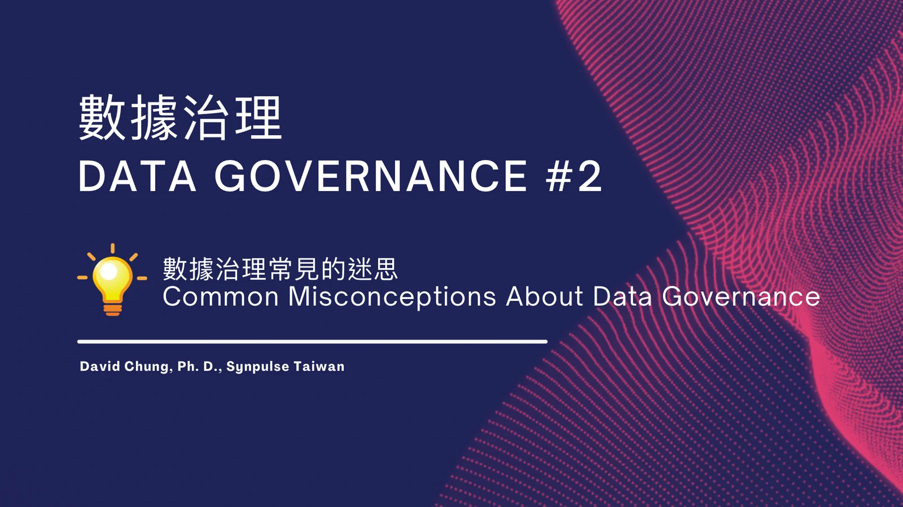
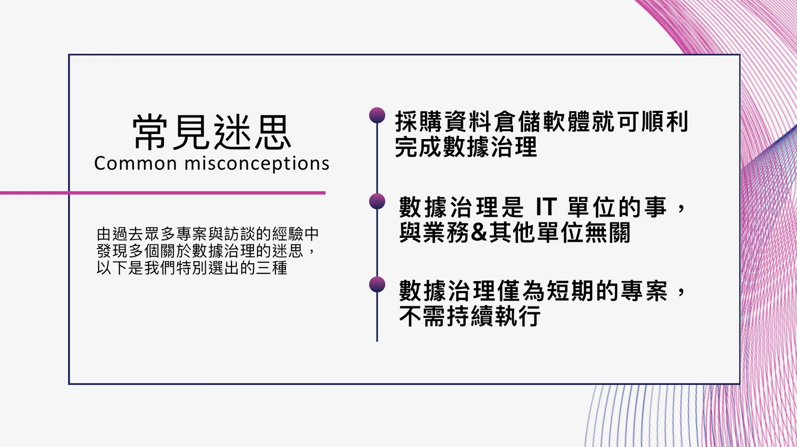
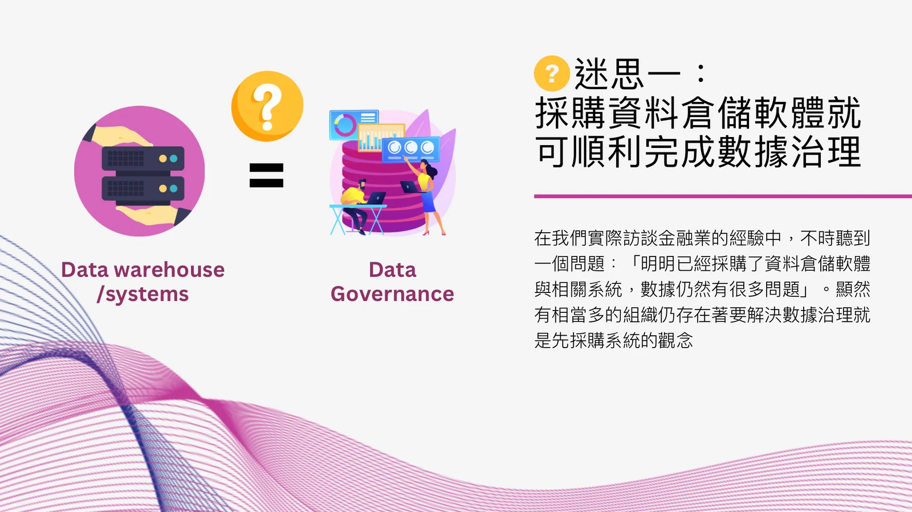
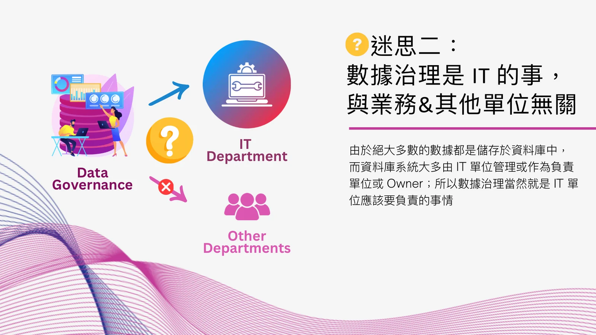
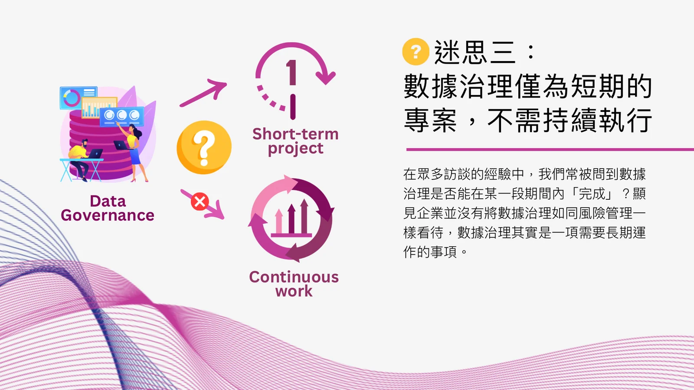

💡 [數據治理 #2] 數據治理常見的迷思
💡[Data Governance #2] Common Misconceptions About Data Governance
長期以來數據治理對金融機構來說重要性不言可喻，但往往投入數據治理資源的優先序相對並不高。然而近幾年隨著資料科學、AI乃至於生成式AI（Gen AI）的興起，數據治理的重要性不斷因為技術的演進而進一步「被迫地」突顯出來。在本系列文章將以數據治理 Data Governance 為核心進行不同面向的介紹與探討。
本篇文章將介紹：數據治理常見的迷思。

我們曾與多個金融領域的客戶進行有關數據治理的訪談，在訪談中我們常常向客戶詢問他們所理解的數據治理為何，如何進行，以及該由誰負責等與日常業務中高度相關的問題。然而從我們所蒐集的回復中常常發現值得進一步研議的問題甚至是迷思。
以下是我們從最常見的迷思中所挑出的三項。

1️⃣採購資料倉儲軟體就可順利完成數據治理:在我們實際訪談金融業的經驗中，不時聽到一個問題：「明明已經採購了資料倉儲軟體與相關系統，數據仍然有很多問題」。顯然有相當多的組織仍存在著要解決數據治理就是先採購系統的觀念，以及採用了系統就像吃了萬靈丹一樣可以高枕無憂。

2️⃣數據治理是 IT 的事，與業務&其他單位無關:由於絕大多數的數據都是儲存於資料庫中，而資料庫系統大多由 IT 單位管理或作為負責單位或 Owner；所以數據治理當然就是 IT 單位應該要負責的事情。

3️⃣ 數據治理僅為短期的專案，不需持續執行:在眾多訪談的經驗中，我們常被問到數據治理是否能在某一段期間內「完成」？顯見企業並沒有將數據治理如同風險管理一樣看待；數據治理其實是一項需要長期運作的事項。 以上三項是我們在過去的專案與訪談中相當普遍的迷思，也多半是導致客戶在執行數據治理時產生障礙的主因；我們會在後續的文章中進一步解釋並調整這些迷思。

您好，我是星普思 Synpulse Taiwan 的副合夥人 David。星普思為發跡於瑞士且專精於金融業已逾 25年的外商管理顧問公司；我們透過提供管理顧問服務，並運用領先的科技與數位技術來協助客戶解決問題或達成營運目標。
若您有數位轉型、AI轉型、風險管理與永續發展ESG等相關的議題，歡迎洽詢。
原文發表於 LinkedIn。